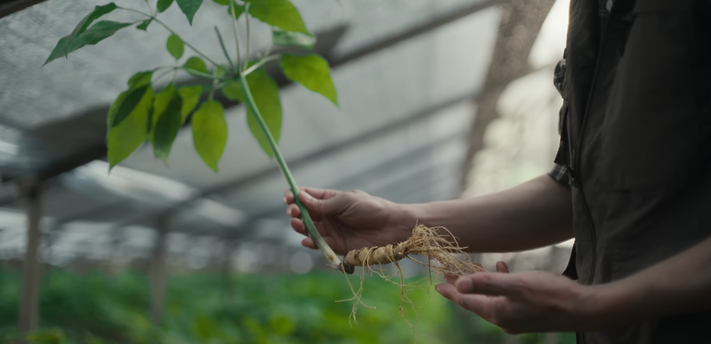
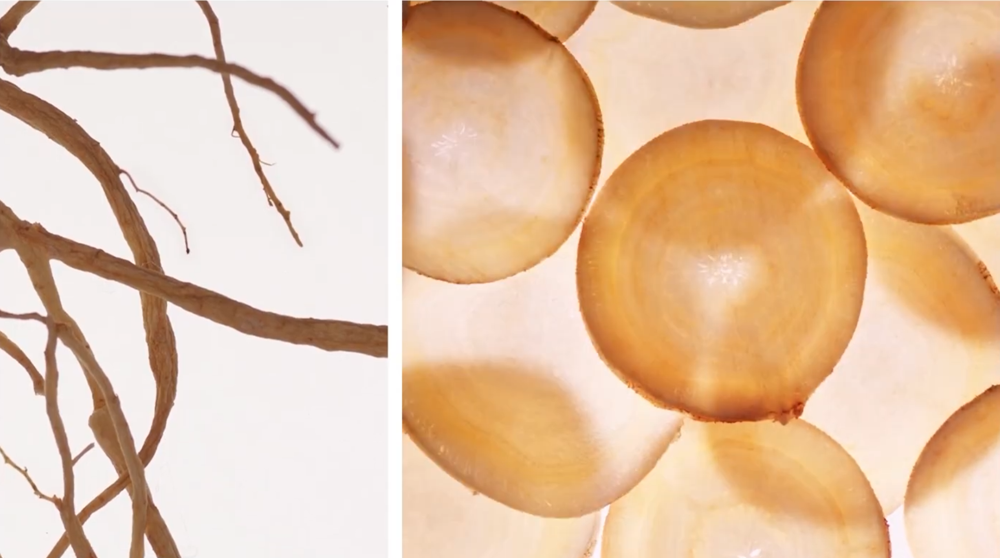
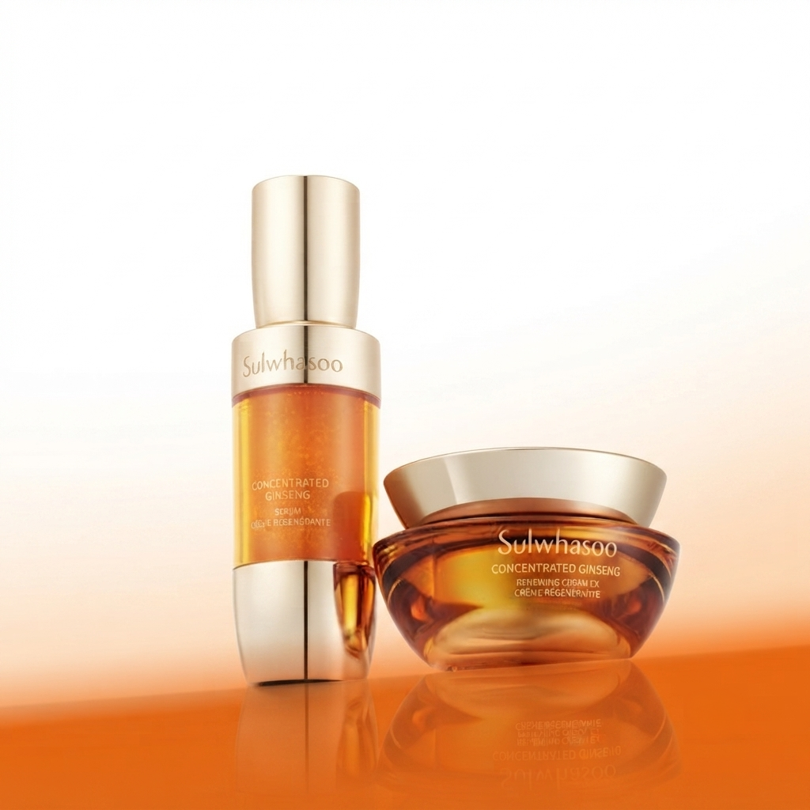
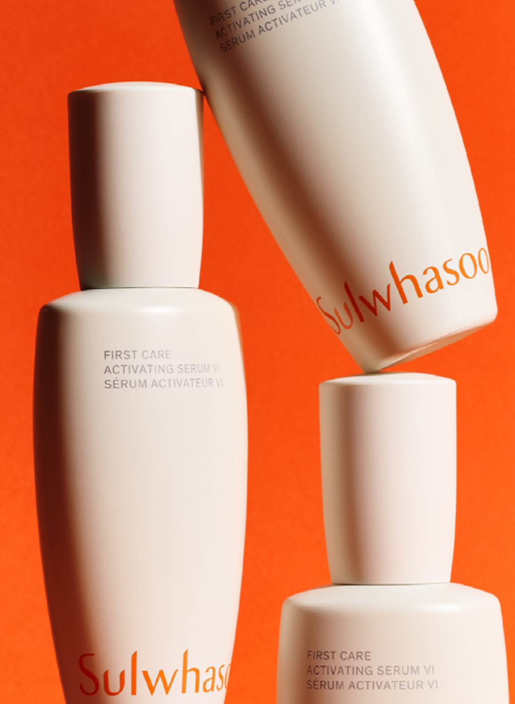
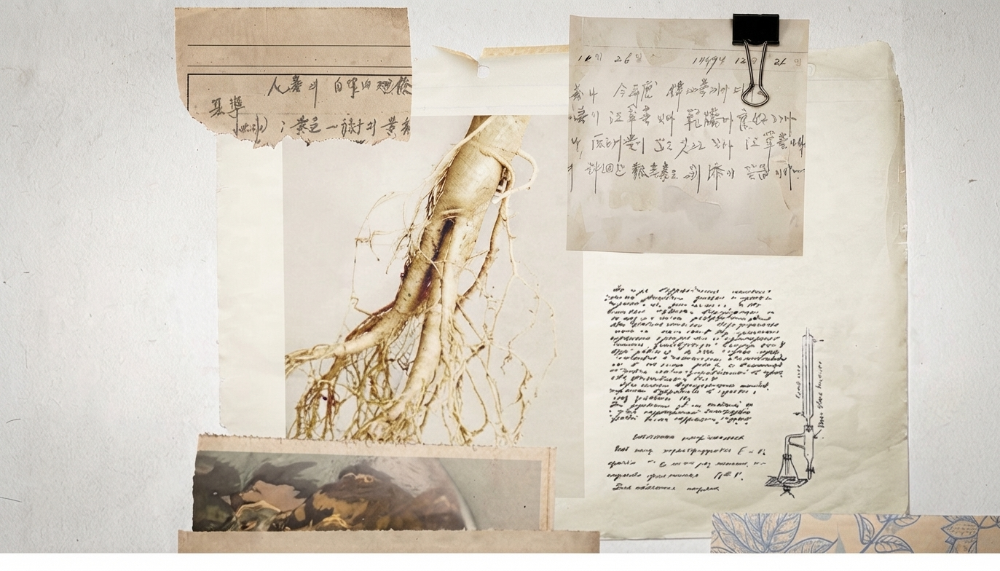
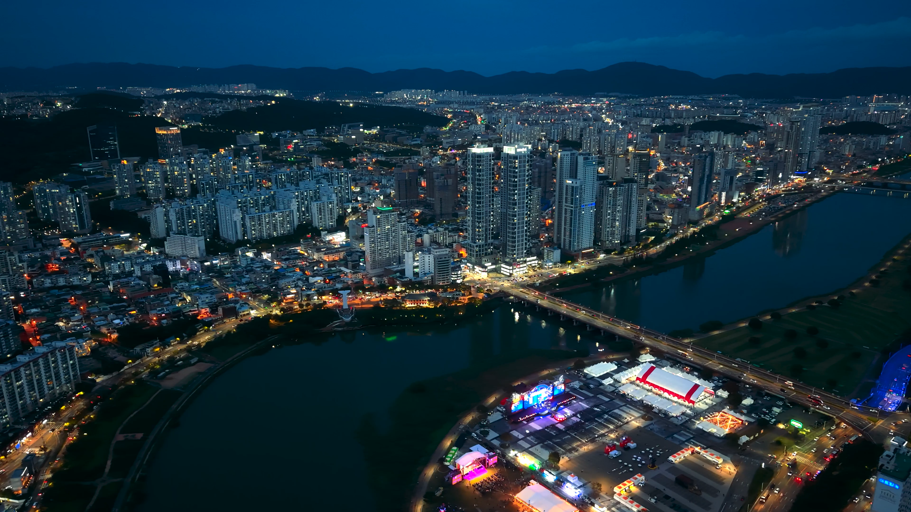
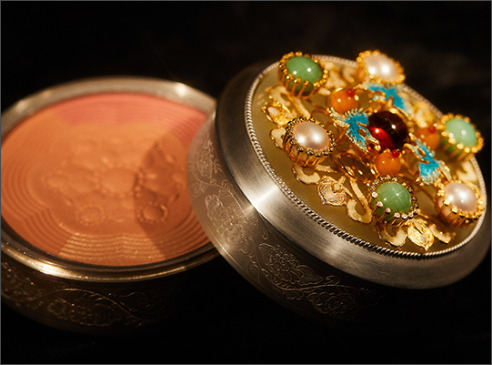
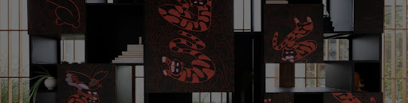
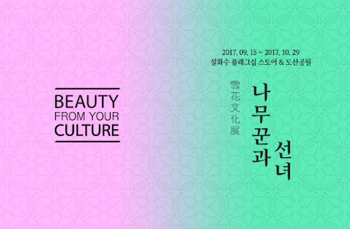
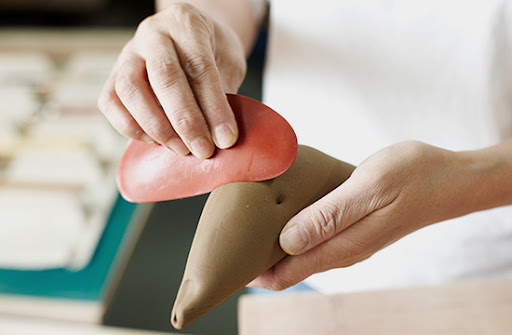

How Sulwhasoo Came to Be Today
OUR HERITAGE
INNOVATING GINSENG SCIENCE
OUR APPROACH
1
Environment
Sulwhasoo inherits the heritage of ginseng and traditional Korean herbal ingredients. Through the introduction of plant-specific DNA barcoding technology and collaboration with international research teams, we preserve the value of raw ingredients used in our products and share it widely with the world.
2
Ginseng Science
Sulwhasoo is building its unique sustainable ecosystem through co-existence with ginseng farmers and fair purchasing practices with local communities. Starting from the raw ingredient sourcing stage, we create only trusted products, ensuring Sulwhasoo's belief in ginseng and herbal ingredients reaches the world.
3
Culture
For years, Sulwhasoo has championed our cultural heritage while reinterpreting it through a modern lens. By engaging with traditional craftsmanship and artistic values, the brand reveals timeless beauty and brings a profound aesthetic experience into the daily lives of modern people.
Raw Material Story
Ginseng, JAUM Activator™
"60 Years of Dedicated Research, Ginseng for Skin Longevity"
Ginseng research started in 1964
Raw Material Research Based on ginseng research continued since 1964, we created JAUM Activator®, a formulation blending 5 ingredients: Peony, Lotus Seed, Solomon's Seal, White Lily, and Rehmannia. Barrier Strengthening, Hydration, Firming — Awakening skin's inherent self-regeneration power.



"Radiant and Resilient Skin Created by Sulwhasoo"

Why Ingestible Ginseng Is Also Good for the Skin: Ginsenomics™ Perfected by Bioconversion Technology
Sulwhasoo closely analyzed the metabolic process of consumed ginseng and simulated enzymes isolated from gut microbiota to secure a precise processing technology capable of mass-producing specific ginseng saponins that prevent skin aging. This is Sulwhasoo's bioconversion technology. The core anti-aging ingredient born from this technology is Ginsenomics™. Sulwhasoo has secured both domestic and global patents for the bioconversion technology that enables the mass production of Ginsenomics™. As a result of this proprietary technical research, Ginsenomics™ continues to be utilized in Sulwhasoo's flagship products, such as Concentrated Ginseng Renewing Cream.
Aged Ginseng Awakening the Skin, Lymphanax™
"Just as green tea is naturally fermented to make black tea, couldn't ginseng also be aged to derive new active compounds?" Sulwhasoo, through continuous ginseng research, drew inspiration from the fermentation process of green tea, which holds abundant active components like ginseng. Thus, Lymphanax™ was born as a key skin-activating ingredient discovered within ginseng aged by Sulwhasoo for 500 hours. Adding this active ingredient to Sulwhasoo's products proved effective in enhancing the skin's inherent capabilities and improving signs of skin aging. Consequently, Lymphanax™ is used as a core ingredient in the 6th Generation First Care Activating Serum.


Ginsenomics™ and Lymphanax™ Perfected Through Gut Microbiota Enzyme Simulation and 500-Hour Aging Biotechnology
Sulwhasoo's proprietary anti-aging expertise originates from scientific research analyzing the metabolic process of ginseng within the body. By artificially simulating gut microbiota enzymes to concentrate and mass-produce specific saponins through 'BioConversion' technology, we created the highly concentrated self-regenerating ingredient Ginsenomics™. Inspired by the green tea fermentation process, we carefully aged ginseng for 500 hours to extract Lymphanax™, an active ingredient for skin activation. Key ginseng ingredients refined through advanced bioprocess technology penetrate deep into the skin, boosting its inherent power of self-regeneration and improving various signs of aging.

Sulwhasoo · Culture
THE ART OF HERITAGE
Reimagining Korean Tradition Through Art, Craft and Culture
Cultural Philosophy
Preserving Korean Heritage, Inspiring Tomorrow
Sulwhasoo believes beauty extends beyond skincare. Through master craftsmanship, cultural exhibitions, and creative collaborations, the brand preserves the essence of Korean heritage while continuously reinterpreting it for a global audience. Every initiative reflects Sulwhasoo's vision of keeping tradition alive through contemporary culture.

Heritage & Classic Luxury
Artisanal
Mastery Reborn

Sulwha Project
Nurturing Future
Heritage

Exhibition Archive
A Decade of
Cultural Dialogue

2013-2014
Luminous Shadows

2019 - 2020
Continuum
Green
Results
Use of Paper Cushioning and Tray Materials
Sulwhasoo replaced the plastic cushioning and tray materials used in domestic set products with paper-based alternatives. Sulwhasoo has already developed a new set structure that completely eliminates plastic trays for bestseller products—including First Care Activating Serum, Concentrated Ginseng Renewing Line, and Ultimate Recovery Line—reducing single-use plastic packaging.
10-ton
Plastic Reduction
Water Usage Optimization
Since 2021, Osan Beauty Park has established an automated monitoring system to track water usage by application, utilizing rainwater for approximately 21% of its total water consumption. Additionally, during the production of Sulwhasoo products, a vacuum process is used to eliminate air bubbles from formulas, which consumes a large amount of tap water. By optimizing water usage in the vacuum pump process, the facility successfully reduced annual water consumption by 1,524 tons.
1,524-ton
Water Reduction
Refill Product Application
Refill products are designed so that customers can simply replace the inner container after use while reusing the outer container. Using the Ultimate Recovery Cream refill reduces plastic usage by up to 55% compared to purchasing a completely new product.
55%
reduction in plastic
Carbon-Neutral Product Production
Osan Beauty Park, where all Sulwhasoo products are manufactured, actively expanded its use of renewable electricity and achieved RE100 in 2022. RE100 is a global campaign with the goal of sourcing 100% of a company's electricity from renewable energy by 2050.
100%
Empty Bottle Collection
Collected empty bottles undergo a primary sorting process at the Amorepacific Osan Logistics Center. They are then sent to specialized glass and plastic recycling facilities for secondary sorting and processing, allowing a portion of the collected cosmetic bottles to be repurposed into new Sulwhasoo products. In addition, we continuously strive to promote the circular reuse of collected empty bottles by utilizing them in benches, artwork, store flooring, and fixtures.
2,473 ton
Cumulative Collection
Transition to Glass Containers
With the 2023 renewal, the packaging for the Ultimate Recovery Cream—previously made of plastic, aluminum, and PET—was converted to glass containers, reducing plastic usage by approximately 70% compared to the previous version.
10-ton
Plastic Reduction
Zero Waste to Landfill
Osan Beauty Park, where Sulwhasoo products are manufactured, continuously works to reduce the amount of landfilled waste by finding beneficial ways to reuse generated waste materials. As a result, it achieved a resource recirculation rate of over 100%, earning the International Zero Waste to Landfill Platinum Validation in September 2023—a first in the cosmetics industry.
100%